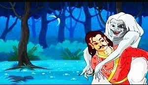

7. કોની પત્ની ? |
ઘણા પ્રયત્નો પછી, રાજા વિક્રમાદિત્યએ ફરી એકવાર બેતાલ પર કબજો કર્યો. જ્યારે તે તેણીને યોગી પાસે લઈ જવા લાગ્યો, ત્યારે બેતાલે એક નવી વાર્તા શરૂ કરી. નવી વાર્તા સંભળાવતા બેતાલે કહ્યું….
એક સમયે ધરમપુર નામના શહેરમાં ગંધર્વસેન નામનો યુવક રહેતો હતો. ગંધર્વસેનનું શરીર ખૂબ જ આકર્ષક હતું. આ જ કારણ હતું કે ઘણી છોકરીઓ તેની સાથે લગ્ન કરવા માંગતી હતી, પરંતુ ગંધર્વસેનને તેમાંથી એક પણ પસંદ ન હતી. જ્યારે બ્રાહ્મણ પુત્ર ગંધર્વસેન તેના ઘોડા પર સવાર થઈને શહેરમાં જતો ત્યારે બધી છોકરીઓ તેની સામે જોતી જ રહેતી. ગંધર્વસેન કોઈની તરફ જોતો ન હતો અને તે ઝડપથી શહેર પાર કરીને દરરોજ મંદિર તરફ જતો હતો. આ મંદિર કાલી દેવીનું મંદિર હતું. ગંધર્વસેન કાલી માના પરમ ભક્ત હતા. તે દરરોજ કાલી દેવીની પૂજા કરતો હતો.
એક દિવસ જ્યારે તે મંદિરેથી પરત ફરી રહ્યો હતો ત્યારે તેણે નદીના કિનારે એક ધોબીને કપડાં ધોતી જોઈ. ગંધર્વસેનને તે છોકરી ખૂબ જ સુંદર લાગી. ગંધર્વસેન તે છોકરીના પ્રેમમાં પડી ગયો અને દિવસ-રાત તેના વિશે વિચારવા લાગ્યો. તે છોકરી સાથે વાત કરવાનો કોઈ રસ્તો શોધી શકતો નથી. એક દિવસ, કાલી માના મંદિરમાં પૂજા કરતી વખતે, તેણે પ્રતિજ્ઞા લીધી કે જો છોકરી તેની બનશે, તો તે કાલી માના ચરણોમાં માથું અર્પણ કરશે. ગંધર્વસેન ખાવા-પીવાનું ભૂલી ગયો હતો, તે દિવસ-રાત એ જ છોકરી વિશે વિચારતો રહ્યો. પરિણામ એ આવ્યું કે ગંધર્વસેન બીમાર પડી ગયા.
ગાંધર્વસેનની માંદગીના સમાચાર સાંભળીને તેમના પરમ મિત્ર દેવદત્ત તેમને મળવા આવ્યા. પોતાના પરમ મિત્રને પથારી પર પડેલો જોઈને દેવદત્તે તેના ઉદાસીનું કારણ પૂછ્યું. ગંધર્વસેને તેની વાર્તા દેવદત્તને સંભળાવી અને કહ્યું કે જો તે છોકરી સાથે લગ્ન નહીં કરે તો તે મરી જશે. દેવદત્ત તેના મિત્રને ખૂબ પ્રેમ કરતો હતો, તેથી તેણે છોકરીને શોધવાનું નક્કી કર્યું. દેવદત્ત એ છોકરીને શોધવામાં સફળ થયો. દેવદત્તે છોકરીના પિતાને તેમની પુત્રીના લગ્ન ગંધર્વસેન સાથે કરવા કહ્યું. છોકરીના પિતાએ સમગ્ર પરિસ્થિતિનો હિસાબ લીધો અને તેમની પુત્રીના લગ્ન ગંધર્વસેન સાથે કરાવ્યા.
લગ્નના પાંચ દિવસ વીતી ગયા અને ગાંધર્વસેન કાલી મંદિરમાં લીધેલી પ્રતિજ્ઞા ભૂલી ગયા. એક દિવસ ગંધર્વસેનને સ્વપ્નમાં પોતાનો પડછાયો દેખાય છે. તેનો પડછાયો તેને તે વચનની યાદ અપાવે છે અને કહે છે કે જો તમે આ વચન પૂર્ણ નહીં કરો તો તમે સ્વાર્થી કહેવાશો. બીજા દિવસે ગંધર્વસેનને તેની ભૂલનો અહેસાસ થાય છે અને કાલી મંદિરમાં પોતાનું બલિદાન આપવા તૈયાર થાય છે. તે તેના મિત્ર દેવદત્તને બોલાવે છે અને તેને કહે છે કે હું, તું અને તારી ભાભી મંદિરે જઈએ છીએ. હું મંદિરની અંદર પૂજા કરીશ અને તું બહાર તારી ભાભીનું ધ્યાન રાખજે.
દેવદત્ત મંદિર જવા તૈયાર થાય છે. બંને મિત્રો યુવતી સાથે મંદિરે પહોંચે છે. ગંધર્વસેન પોતાની પ્રતિજ્ઞા પૂર્ણ કરવા મંદિરની અંદર જાય છે. દેવદત્ત અને ગંધર્વસેનની પત્ની બહાર તેની રાહ જુએ છે. જ્યારે ગાંધર્વસેન લાંબા સમય સુધી બહાર ન આવે ત્યારે દેવદત્ત મંદિરની અંદર જાય છે. દેવદત્ત અંદર જાય છે અને જુએ છે કે ગંધર્વસેને પોતાની તલવારથી માથું કાપીને કાલી માને પોતાનું માથું અર્પણ કર્યું છે. આ જોઈને દેવદત્ત ડરી જાય છે. દેવદત્ત વિચારે છે કે ગંધર્વસેને આત્મહત્યા કરી છે એવું કોઈ માનશે નહીં. દરેક વ્યક્તિ વિચારશે કે દેવદત્તે તેના મિત્રની હત્યા કરી છે જેથી તે તેની પત્ની સાથે લગ્ન કરી શકે.
 આ આરોપથી પોતાને બચાવવા માટે દેવદત્તે ગંધર્વસેનની તલવારથી પોતાનું માથું પણ કાપી નાખ્યું.
થોડા સમય પછી, ગંધર્વસેનની પત્ની તેના પતિ અને તેના મિત્ર દેવદત્તને શોધવા મંદિરમાં આવી. ત્યાં તેના બંને મિત્રોના મૃતદેહ જોઈને તે ડરી ગઈ. તેણે વિચાર્યું કે લોકો તેને બંનેની હત્યા માટે દોષી ઠેરવશે, આ કલંકનો સામનો કરવા કરતાં તેના માટે મરી જવું વધુ સારું રહેશે. જેવી છોકરીએ માથું કાપવા માટે તલવાર ઉપાડી કે તરત જ માતા કાલી ત્યાં દેખાયા.
માતા કાલીએ કહ્યું, "દીકરી, હું તારાથી ખુશ છું, મને કહો કે તું શું વરદાન માંગે છે? "છોકરીએ કહ્યું, "તમે આ બંનેને જીવિત કરો." કાલી માએ કહ્યું, "જો તમે આ બંનેના માથા તેમના ધડ પર રાખશો, તો તેઓ જીવંત થઈ જશે." છોકરીએ પણ એવું જ કર્યું, પણ માથું રાખવાની ભૂલ કરી. તેણે ગંધર્વસેનનું માથું દેવદત્ત પર અને દેવદત્તનું માથું ગંધર્વસેનાના ધડ પર મૂક્યું. બંને મિત્રો જીવતા થયા અને તે છોકરી માટે લડવા લાગ્યા.
આટલી બધી વાર્તા સંભળાવ્યા પછી બેતાલે વિક્રમાદિત્યને કહ્યું, “રાજા, હવે તમે મને કહો કે એ છોકરીનો પતિ કોણ છે.” વિક્રમાદિત્ય જવાબ જાણતો હતો. જો તે ચૂપ રહ્યો હોત, તો બેતાલ તેનો શિરચ્છેદ કરી નાખત, તેથી વિક્રમાદિત્યએ કહ્યું, "વ્યક્તિને તેના ચહેરા પરથી ઓળખવામાં આવે છે, તેથી દેવદત્ત તે છોકરીનો પતિ હશે, કારણ કે ગાંધર્વસેનાના મગજનો ભાગ તેના ધડ સાથે જોડાયેલો છે. " બેતાલે કહ્યું, "આ વખતે પણ તમે સાચો જવાબ આપ્યો છે, તેથી મારે ફરીથી ઉડવું પડશે." એમ કહીને બેતાલ ફરી ગાઢ જંગલ તરફ ઉડી ગઈ. રાજા વિક્રમાદિત્ય ફરીથી તેને શોધવા બેતાલની પાછળ ગયા.
વ્યક્તિ જે પણ કરે છે, તે તેના મગજથી કરે છે, તેથી તેની ઓળખ તેના મગજથી જ થાય છે